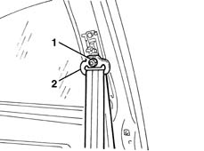
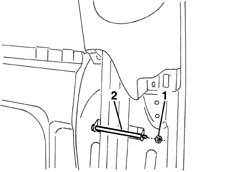
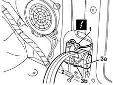

7065A12 front seat belt (one), lh or rh, with pretensioner on wheel - r r
- Path
- Procedures > 70 FITTINGS > 7065 SEAT BELTS AND ACCESSORIES > 7065A FRONT SEAT BELTS > 7065A12 front seat belt (one), lh or rh, with pretensioner on wheel - r r
- Kind
- repair procedure (removal / refitting; the operation number is the code)
- Applies to
- all engines; all production periods
- Interactive page
- https://sloeber94.github.io/elrnDB-lYpsln/en/#/2429687
Applies to: all engines; all production periods
Applies to: all engines; all production periods
 Removing
Removing
 Refitting
Refitting7040L40 front compartment scuff strip - r r
7050A20 one-piece rear seat cushion - r r
7040H38 central pillar upper element - r r
1. Undo the nut.
2. Move the seat belt relay.

Applies to: all engines; all production periods
1. Undo the nut.
2. Remove the pin and release the seat belt.

Applies to: all engines; all production periods
1. Disconnect the electrical connection from the pretensioner.
 | Name | Connector |
|---|---|---|
1 | Driver's seat belt pre-tensioner |
| Name | Connector |
|---|---|---|
1 | Front passenger seat belt pretensioner |
2. Undo the bolt.
3. Remove the seat belt and pretensioner (3a) releasing the retainer (3b) from the housing.

Applies to: all engines; all production periods
Place the pretensioner in the special cabinet, resting it on a free surface.
Applies to: all engines; all production periods
Refitting
RemovingReposition the pretensioner and make sure that retainer engages in the housing in the bodyshell.
Tighten the bolt to the specified torque.
 | Fastening | Component | Ø | Value (daNm) |
|---|---|---|---|---|
- | Bolt | FRONT SEAT BELT PRETENSIONER. | M7/16' | 4.0 |
Connect the electrical connection for the pretensioner.
Position the seat belt in its seat and insert the pin.
Tighten the nut.
Position the seat belt idler and tighten the nut to the recommended torque.
| Fastening | Component | Ø | Value (daNm) |
|---|---|---|---|---|
- | Nut | FRONT SEAT BELT IDLER | M7/16" | 4.0 |
7040H38 central pillar upper element - r r
7050A20 one-piece rear seat cushion - r r
7040L40 front compartment scuff strip - r r
Check the operation of the system using the Examiner or another tester.